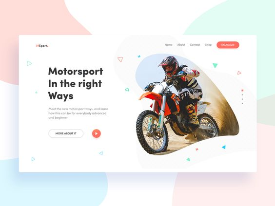

"White" Space
Clean Design

The use of "white" or negative spaces in the Motor Sport. The homepage is perfect, combined with the giant image of a motorcyclist and the huge font announcing his new designs. The fact that the text overlaps the actual image gives even more space around the focal point. They also use the white background color to put more emphasis on the main image and the title text.
There are many great principles used on the Deport Village home page, but the one that stands out the most to me is Fitt's Law. They make the call-to-action button highly incentive to the user to click, and occupy a good space within the first part of the screen to immediately attract the attention of anyone who is looking to buy or continue browsing the page
PARC: Contrast
and Alignment
Gift Collection uses alignment and contrast well on its home page. The alignment is justified both left and right, but in each of two different sections of the page. Contrast is provided not only by this offset of alignments, but also by colors, vibrant red and black text on a white background, and also by font sizes.